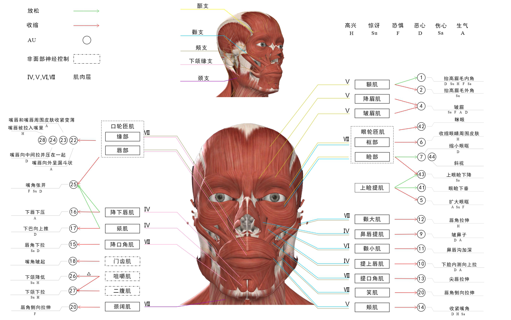

面部肌肉、面部动作单元（AU）与情绪的关系图
AU示意图列表
| AU | 动图 | 动作描述（解释） | 情绪 |
|---|---|---|---|
| 1 |
1.0x
|
抬高眉毛内角 | 恶心、惊讶、高兴、恐惧、伤心 |
| 2 |
1.0x
|
抬高眉毛外角 | 惊讶 |
| 4 |
1.0x
|
皱眉 | 伤心、恐惧、生气、恶心 |
| 5 |
1.0x
|
扩大眼眶 | 生气、惊讶、恐惧 |
| 6 |
1.0x
|
收缩眼睛周围皮肤 | 高兴 |
| 7 |
1.0x
|
缩小眼眶 | 恶心 |
| 9 |
1.0x
|
皱鼻 | 恶心、生气 |
| 10 |
1.0x
|
抬上嘴唇，鼻唇沟加深 | 恶心、生气 |
| 11 |
1.0x
|
鼻孔扩大，鼻唇沟加深 | |
| 12 |
1.0x
|
唇角拉伸 | 高兴 |
| 13 |
1.0x
|
嘴角提升 | |
| 14 |
1.0x
|
收紧嘴角 | 恶心、高兴、伤心 |
| 15 |
1.0x
|
唇角下拉 | 伤心、恶心 |
| 16 |
1.0x
|
下唇下压 | 生气 |
| 17 |
1.0x
|
噘嘴 | 恶心 |
| 18 |
1.0x
|
嘴角皱起 | |
| 20 |
1.0x
|
嘴唇侧向拉伸 | 恐惧 |
| 22 |
1.0x
> |
嘴唇向外呈漏斗状 | 生气 |
| 23 |
1.0x
|
嘴唇和嘴唇周围皮肤收紧变薄 | 生气 |
| 24 |
1.0x
|
嘴唇向中间拉并压在一起 | 恶心 |
| 25 |
1.0x
|
嘴角张开 | 恐惧、惊讶、恶心 |
| 26 |
1.0x
|
嘴巴小张 | 惊讶、高兴 |
| 27 |
1.0x
|
嘴巴大张 | 惊讶、高兴 |
| 28 |
1.0x
|
抿嘴 | 高兴 |
| 41 |
1.0x
|
眼睑下垂 | |
| 42 |
1.0x
|
眯眼 | |
| 43 |
1.0x
|
上眼睑下降 | 伤心 |
| 44 |
1.0x
|
斜视 | |
| 45 |
1.0x
|
双眼眨眼 | |
| 46 |
1.0x
|
单眼眨眼 |
一个简短的微表情编码指南
- 当AU12出现时，可以被编码为积极情绪，即高兴；AU6，AU28都为高兴的特定AU，也可以被编码为积极情绪；
- 当AU2出现时，可以被编码为惊讶；
- 当AU4出现时，可以被编码为消极情绪；
- 当AU16、AU22和AU23这些生气的特定AU出现时，可以被编码为生气；
- 当AU1，AU4，AU5和AU25同时出现时，可以编码为害怕；
- 当AU7、AU24这些厌恶的特定AU出现时，可以被编码为厌恶；
- 当AU4和AU5同时出现时，可以编码为伤心；AU43为伤心的特定AU，也可以编码为伤心。
参考文献
Dong, Z., Wang, G., Lu, S., Li, J., Yan, W., & Wang, S. J. (2022). Spontaneous Facial Expressions and Micro-expressions Coding: From Brain to Face. Frontiers in Psychology, 5808.